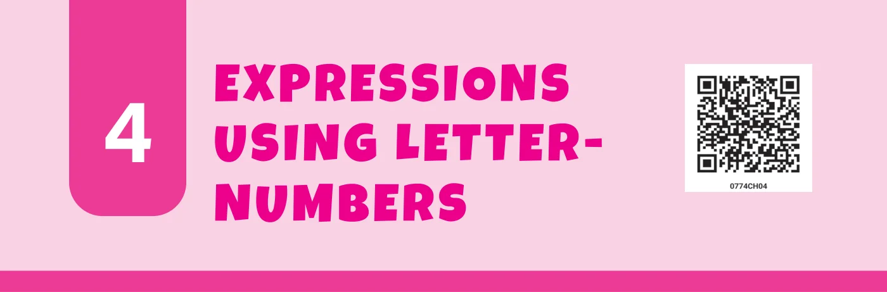
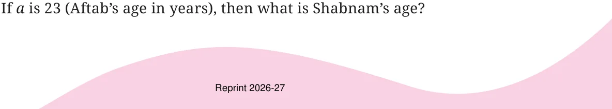
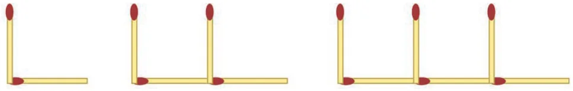
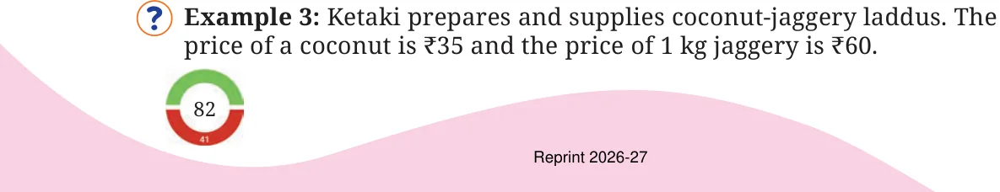
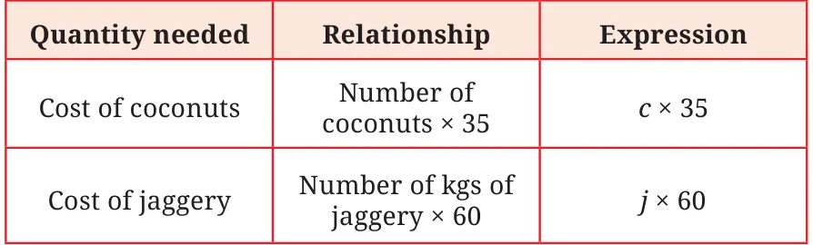

<!DOCTYPE html>
<html lang="en">
<head>
<meta charset="UTF-8">
<meta name="viewport" content="width=device-width,initial-scale=1">
<title>4.1 The Notion of Letter-Numbers — Expressions using Letter Numbers</title>
<meta name="description" content="Class 7 Mathematics · Part 1 · Expressions using Letter Numbers · 4.1 The Notion of Letter-Numbers">
<link rel="icon" href="data:image/svg+xml,<svg xmlns='http://www.w3.org/2000/svg' viewBox='0 0 100 100'><text y='.9em' font-size='90'>📘</text></svg>">
<link rel="stylesheet" href="../../../assets/book.css">
<link rel="stylesheet" href="https://cdn.jsdelivr.net/npm/katex@0.16.11/dist/katex.min.css" crossorigin="anonymous">
</head>
<body>
<header class="topbar">
<div class="topbar-in">
  <div class="crumb">
    <span class="c1"><a href="../../../index.html">Library</a> · <a href="../../index.html">Class 7 Mathematics · Part 1</a></span>
    <span class="c2">Expressions using Letter Numbers · 4.1 The Notion of Letter-Numbers</span>
  </div>
  <a class="tb-btn" data-nav="prev" href="../../03-a-peek-beyond-the-point/31-figure-it-out/index.html" title="Figure it Out">←</a>
  <details class="drawer"><summary class="tb-btn" title="Sections in this chapter">☰</summary>
<div class="drawer-panel"><div class="dh">Expressions using Letter Numbers</div><a href="../01-the-notion-of-letter-numbers-4.1/index.html" aria-current="page">4.1 The Notion of Letter-Numbers</a><a href="../02-figure-it-out/index.html">Figure it Out</a><a href="../03-revisiting-arithmetic-expressions-4.2/index.html">4.2 Revisiting Arithmetic Expressions</a><a href="../04-omission-of-the-multiplication-symbol-in-algebraic-express-4.3/index.html">4.3 Omission of the Multiplication Symbol in Algebraic Expressions</a><a href="../05-mind-the-mistake-mend-the-mistake/index.html">Mind the Mistake, Mend the Mistake</a><a href="../06-simplification-of-algebraic-expressions-4.4/index.html">4.4 Simplification of Algebraic Expressions</a><a href="../07-figure-it-out/index.html">Figure it Out</a><a href="../08-mind-the-mistake-mend-the-mistake/index.html">Mind the Mistake, Mend the Mistake</a><a href="../09-pick-patterns-and-reveal-relationships-4.5/index.html">4.5 Pick Patterns and Reveal Relationships</a><a href="../10-formula-detective/index.html">Formula Detective</a><a href="../11-algebraic-expressions-to-describe-patterns/index.html">Algebraic Expressions to Describe Patterns</a><a href="../12-patterns-in-a-calendar/index.html">Patterns in a Calendar</a><a href="../13-matchstick-patterns/index.html">Matchstick Patterns</a><a href="../14-figure-it-out/index.html">Figure it Out</a><a href="../15-summary/index.html">SUMMARY</a><a href="../16-expressions-using-letter-numbers/index.html">Expressions Using Letter–Numbers</a><a href="../17-figure-it-out/index.html">Figure it Out</a><a href="../18-figure-it-out/index.html">Figure it Out</a><a href="../19-figure-it-out/index.html">Figure it Out</a></div></details>
  <a class="tb-btn" data-nav="next" href="../../04-expressions-using-letter-numbers/02-figure-it-out/index.html" title="Figure it Out">→</a>
  <button class="tb-btn" data-theme-toggle title="Toggle light / dark" aria-label="Toggle light or dark theme">◐</button>
</div>
<div class="progress"><span style="width:40.8%"></span></div>
</header>
<main class="wrap">
<div class="sec-head">
  <p class="eyebrow"><a href="../index.html">Chapter 4 · Expressions using Letter Numbers</a></p>
  <h1>4.1 The Notion of Letter-Numbers</h1>
  <p class="sec-meta">Textbook pages 1–4 · 8 figures</p>
</div>
<article class="prose">
<figure class="fig wide"></figure>
<p>In this chapter we shall look at a concise way of expressing mathematical relations and patterns. We shall see how this helps us in thinking about these relationships and patterns, and in explaining why they may hold true. Example 1: Shabnam is 3 years older than Aftab. When Aftab’s age 10 years, Shabnam’s age will be 13 years. Now Aftab’s age is 18 years, what will Shabnam’s age be? _______</p>
<p>Given Aftab’s age, how will you find out Shabnam’s age? Easy: We add 3 to Aftab’s age to get Shabnam’s age.</p>
<p>Can we write this as an expression? Shabnam’s age is 3 years more than Aftab’s. In short, this can be written as:</p>
<p>Shabnam’s age = Aftab’s age \(+ 3\).</p>
<p>Such mathematical relations are Aftab’s Expression for generally represented in a shorthand age Shabnam’s age form. In the relation above, instead of writing the phrase ‘Aftab’s Age’, the convention is to use a convenient \(104 10 4 + 3+ 3\) symbol. Usually, letters or short phrases \(23 23 + 3\) are used for this purpose.denote Aftab’s age (we could have Let us say we use the letter a to a? a ? \(+ 3+ 3\) used any other letter), and s to denote</p>
<p>Shabnam’s age. Then the expression to find Shabnam’s age will be \(a + 3\), which can be written as</p>
<p class="caption">Fig. 4.1</p>
<div class="mathblock"><p>\(= + 3\).</p></div>
<figure class="fig wide"></figure>
<p>Replacing a by 23 in the expression \(a + 3\), we get, \(s = 23 + 3 = 26\) years. Letters such as a and s that are used to represent numbers are called letter-numbers. Mathematical expressions containing letter-numbers, such as the expression \(a + 3\), are called algebraic expressions. Given the age of Shabnam, write an expression to find Aftab’s age. We know that Aftab is 3 years younger than Shabnam. So, Aftab’s age will be 3 less than Shabnam’s. This can be described as Aftab’s age = Shabnam’s age \(- 3\). If we again use the letter a to denote Aftab’s age and the letter s to denote Shabnam’s age, then the algebraic expression would be: \(a = s - 3\), meaning 3 less than s.</p>
<p>Use this expression to find Aftab’s age if Shabnam’s age is 20.</p>
<p>Example 2: Parthiv is making matchstick patterns. He repeatedly places Ls next to each other. Each L has two matchsticks as shown in Figure 4.2.</p>
<figure class="fig wide"><figcaption>Fig. 4.2</figcaption></figure>
<p>How many matchsticks are needed to make 5 Ls? It will be \(5 \times 2\). How many matchsticks are needed to make 7 Ls? It will be \(7 \times 2\). How many matchsticks are needed to make 45 Ls? It will be \(45 \times 2\). Now, what is the relation between the number of Ls and the number of sticks? First, let us describe the relationship or the pattern here. Every L needs 2 matchsticks. So the number of matchsticks needed will be 2 times the number of L’s. This can be written as: Number of matchsticks \(= 2 \times\) Number of L’s Now, we can use any letter to denote the number of L’s. Let’s use n. The algebraic expression for the number of matchsticks will be:</p>
<div class="mathblock"><p>\(2 \times n\).</p></div>
<p>This expression tells us how many matchsticks are needed to make n L’s. To find the number of matchsticks, we just replace n by the number of L.</p>
<figure class="fig wide"></figure>
<p>How much should she pay if she buys 10 coconuts and 5 kg jaggery? Cost of 10 coconuts \(= 10 \times\) ₹35 Cost of 5 kg jaggery \(= 5 \times\) ₹60 Total cost \(= 10 \times\) ₹35 \(+ 5 \times\) ₹60 = ₹350 + ₹300 = ₹650. How much should she pay if she buys 8 coconuts and 9 kg jaggery?</p>
<p>Write an algebraic expression to find the total amount to be paid for a given number of coconuts and quantity of jaggery. Let us identify the relationships and then write the expressions.</p>
<figure class="fig table-fig wide"></figure>
<p>Here, ‘c’ represents the number of coconuts and ‘j’ represents the number of kgs of jaggery. The total amount to be paid will be: Cost of coconuts + Cost of jaggery. The corresponding algebraic expression can be written as:</p>
<div class="mathblock"><p>\(c \times 35 + j \times 60\)</p></div>
<p>Use this expression (or formula) to find the total amount to be paid for 7 coconuts and 4 kg jaggery. Notice that for different values of ‘c’ and ‘j’, the value of the expression also changes. Writing this expression as a sum of terms we get:</p>
<div class="mathblock"><p>\(c \times 35 + j \times 60\)</p></div>
<p>Example 4: We are familiar with calculating the perimeters of simple shapes. Write expressions for perimeters. The perimeter of a square is 4 times the length of its side. This can be written as the expression: \(4 \times q\), where q stands for the sidelength. What is the perimeter of a square with sidelength 7 cm? Use the expression to find out. You must have realised how the use of letter-numbers and algebraic</p>
<figure class="fig wide"></figure>
<p>a concise way. Mathematical relations expressed this way are often called formulas.</p>
</article>
<nav class="pager"><a class="" data-nav="prev" href="../../03-a-peek-beyond-the-point/31-figure-it-out/index.html"><span class="dir">← Previous</span><span class="t">Figure it Out</span><span class="ch">A Peek Beyond the Point</span></a><a class="nx" data-nav="next" href="../../04-expressions-using-letter-numbers/02-figure-it-out/index.html"><span class="dir">Next →</span><span class="t">Figure it Out</span><span class="ch">Expressions using Letter Numbers</span></a></nav>
</main><footer class="site">Generated from the source textbook PDFs · text, figures and exercises belong to their respective publishers.</footer><script defer src="https://cdn.jsdelivr.net/npm/katex@0.16.11/dist/katex.min.js" crossorigin="anonymous"></script>
<script defer src="https://cdn.jsdelivr.net/npm/katex@0.16.11/dist/contrib/auto-render.min.js" crossorigin="anonymous"
  onload="renderMathInElement(document.body,{delimiters:[
    {left:'\\(',right:'\\)',display:false},
    {left:'$$',right:'$$',display:true},
    {left:'\\[',right:'\\]',display:true}],throwOnError:false,ignoredTags:['script','noscript','style','textarea','pre','code']})"></script>
<script src="../../../assets/book.js"></script>
<script defer src="../../../../assets/search.js?v=1789782769"></script>
<script defer src="../../../../assets/screenshot.js?v=1789782769"></script>
</body>
</html>
